Cap. 10 Investigando os dados
No delineamento em parcelas subdivididas existem dois tipos de tratamento: o principal e o secundário. As parcelas são subdivididas no espaço, ou no tempo. Depois que os tratamentos principais são sorteados nas parcelas, sorteia-se o tratamento secundário nas subparcelas de cada parcela.
Indica-se o uso de parcelas subdivididas quando:
- A parcela é uma “unidade” que pode receber vários tratamentos secundários. No setor florestal esta unidade pode ser uma vaso, ou mesmo uma árvore.
- Não é possível instalar o experimento no esquema fatorial.
- O tratamento principal exige parcelas custosas, seja do ponto de vista financeiro ou do esforço.
- A busca pela precisão está no tratamento secundário.
- Deseja-se que a Variação entre subparcelas seja menor que entre as parcelas.
O modelo estatístico do delineamento fatorial duplo inteiramente casualizado é:
\[Y = Xmed + BLOCO + TRAT A + Erro Parcela + TRAT B + (TRAT A * TRAT B) + Erro Subparcela\]
10.1 O caso balanceado
Como exemplo de um desenho de parcela subdividida balanceado, vamos analisar um experimento de regeneração natural do sub bosque de três formações florestais. Nas parcelas de cada uma das área naturais estudadas, implantaram-se subparcelas correspondendo a três alturas de desrama. O efeito dos tratamentos foi medido através do número de indivíduos regenerantes.
- Fator na parcela: Floresta A, B e C
- Fator nas subparcelas: Desrama 2, 5 e 7 metros
- 3 repetições
- Variável de interesse: número de indivíduos regenerantes
| floresta | rep | desrama | indiv |
|---|---|---|---|
| A | 1 | 2 | 48 |
| A | 2 | 2 | 47 |
| A | 3 | 2 | 47 |
| A | 1 | 5 | 79 |
| A | 2 | 5 | 62 |
| A | 3 | 5 | 65 |
| A | 1 | 7 | 101 |
| A | 2 | 7 | 105 |
| A | 3 | 7 | 112 |
| B | 1 | 2 | 90 |
| B | 2 | 2 | 97 |
| B | 3 | 2 | 114 |
| B | 1 | 5 | 123 |
| B | 2 | 5 | 145 |
| B | 3 | 5 | 122 |
| B | 1 | 7 | 172 |
| B | 2 | 7 | 157 |
| B | 3 | 7 | 177 |
| C | 1 | 2 | 100 |
| C | 2 | 2 | 101 |
| C | 3 | 2 | 103 |
| C | 1 | 5 | 130 |
| C | 2 | 5 | 133 |
| C | 3 | 5 | 140 |
| C | 1 | 7 | 144 |
| C | 2 | 7 | 147 |
| C | 3 | 7 | 148 |
O primeiro passo é importar o arquivo csv contendo os resultados do experimento para dentro do R. Esta tarefa pode ser realizada através do seguinte comando:
Você já sabe! Antes de ir para análise estatística explore graficamente seus dados. Veja alguns exemplos de gráficos que podem ajudá-lo a construir suas hipóteses e antecipar os resultados que serão apresentados pelas análise estatística:
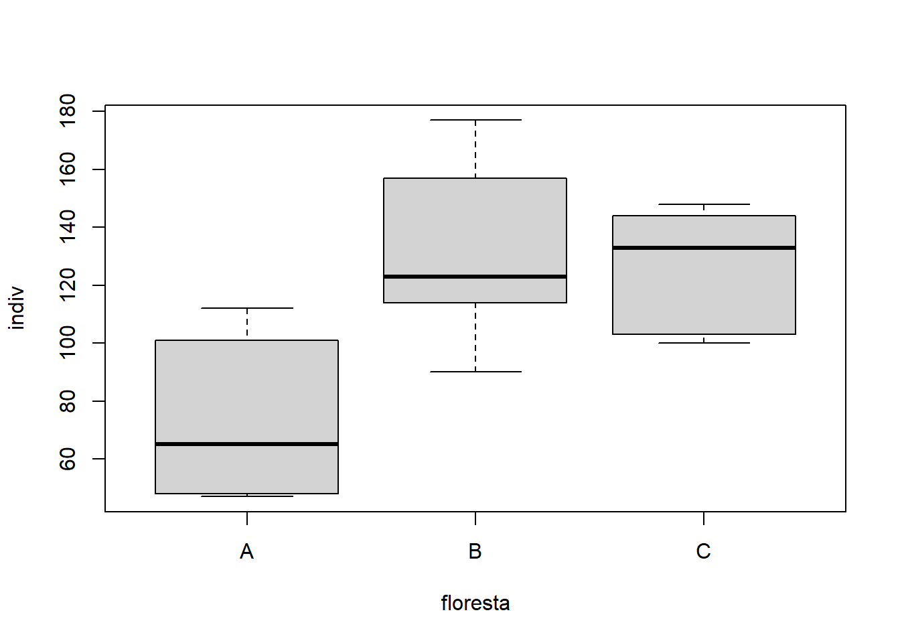
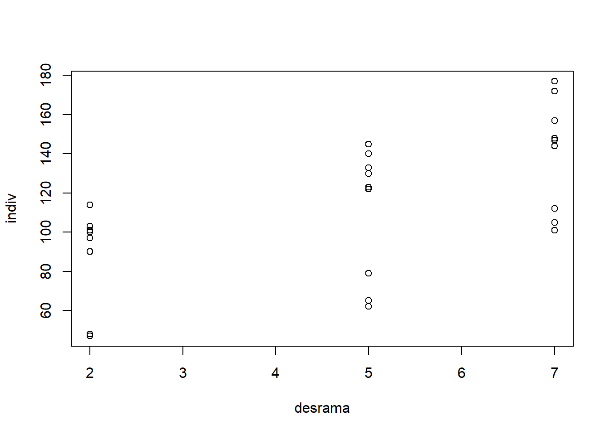
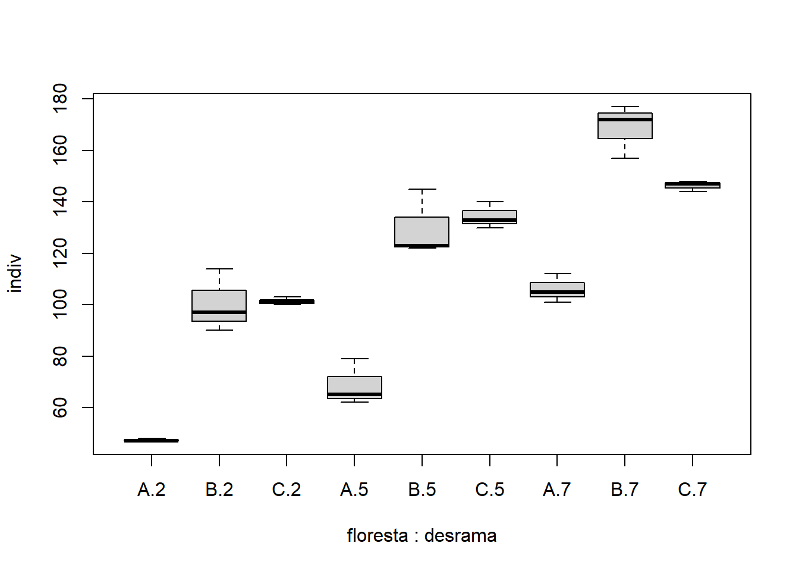
# Isolando os níveis de desrana
# Fixando desrana até 2 metros
boxplot(data = sub[sub$desrama == 2,], indiv ~ floresta)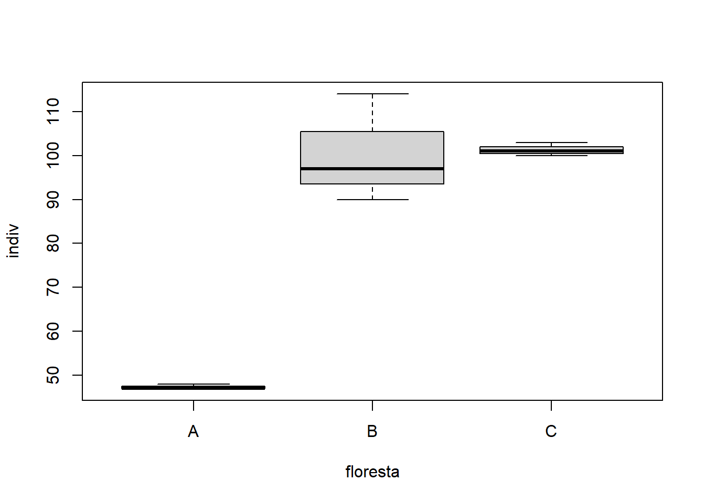
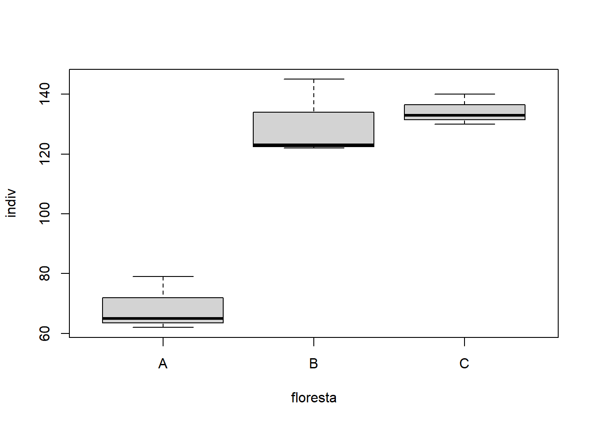
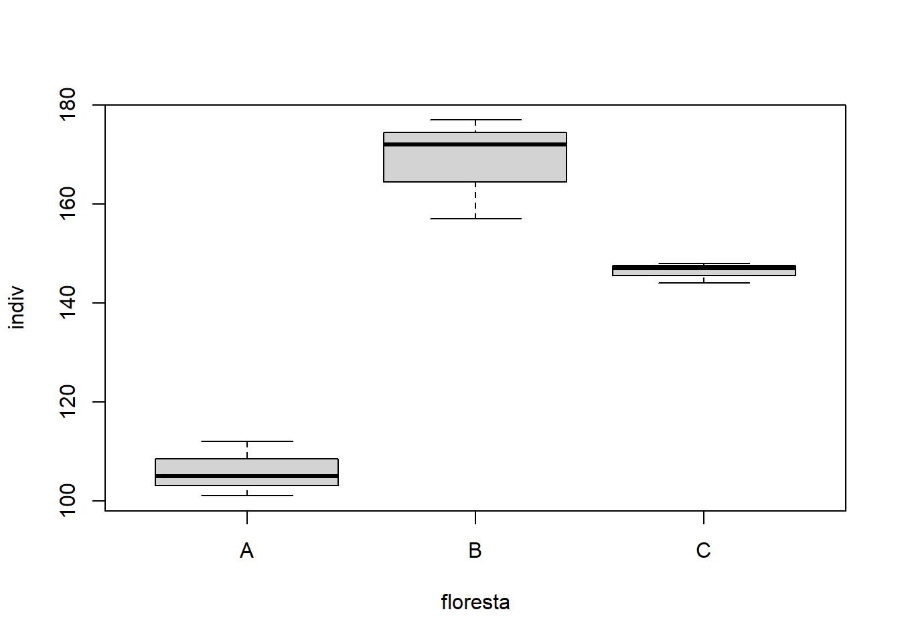
# Isolando os tipos de floresta
# Fixando floresta igual a A
plot(data = sub[sub$floresta == "A",], indiv ~ desrama)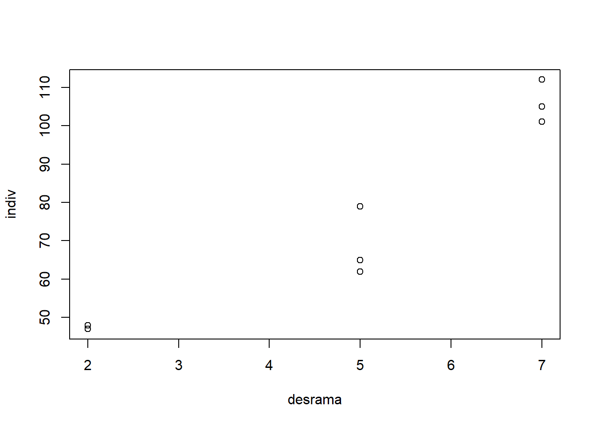
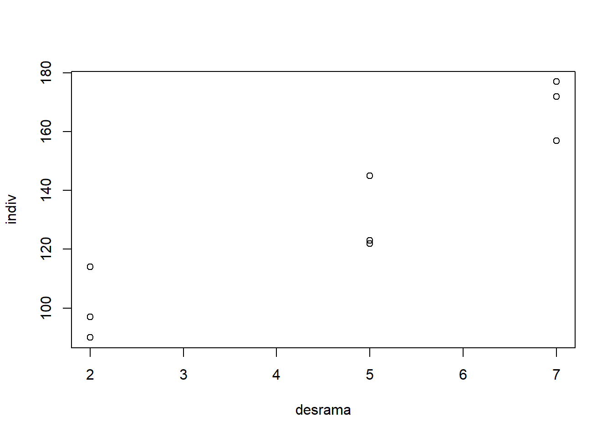
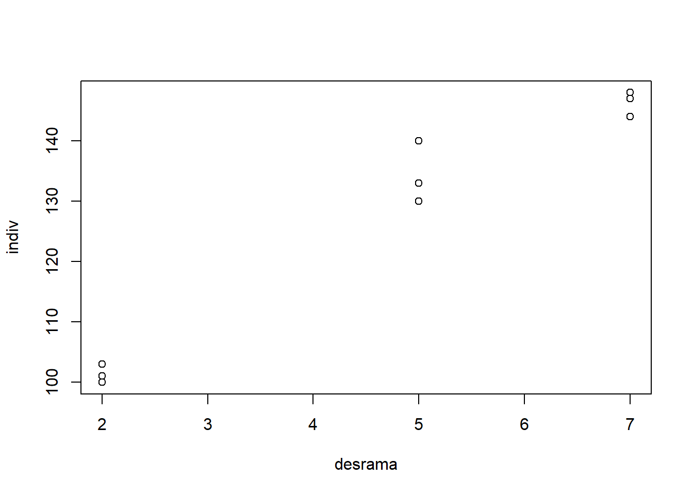
Analisando os gráficos acima, os fatores parecem significativos, assim como a interação. Os dados apresentam-se consistentes, sem a presença pontos fora da tendência. Infelizmente o pacote ExpDes.pt não inclui as análises de pressuposição para o delineamento de parcelas subdivididas. Existem várias maneiras de contornar esta questão, uma delas é combinar as qualidades de diferentes pacotes. Aqui por exemplo, podemos rodar a ANOVA a partir de ambos os pacotes easyanova e ExpDes.pt. Assim podemos utilizar os testes estatísticos das pressuposições de um e a ANOVA e desdobramentos do outro.
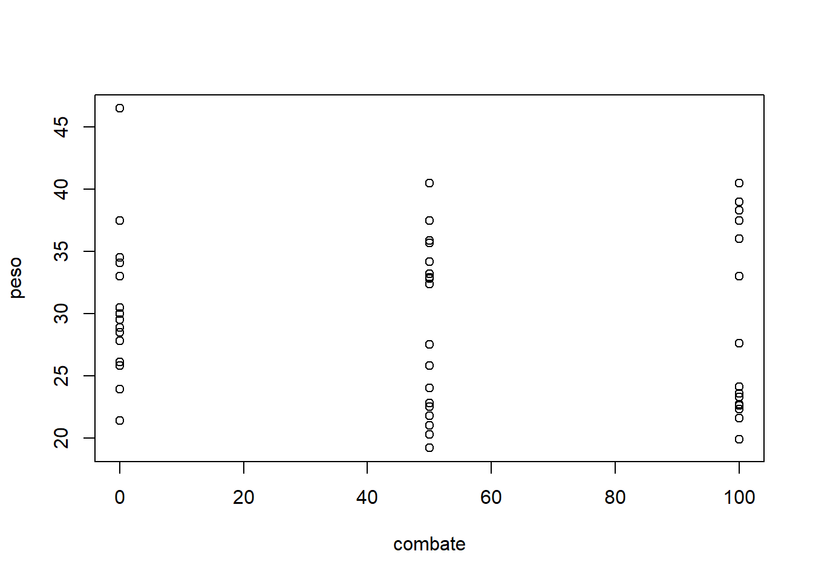
Para conferência, é possível verificar que a ANOVA é igual em ambos os pacotes.
## $`Marginal anova (Type III Sum of Squares)`
## numDF denDF F-value p-value
## plot 2 6 267.37381 <.0001
## split.plot 2 12 94.56819 <.0001
## plot:split.plot 4 12 2.55256 0.0935Como já vimos anteriormente, o teste de normalidade e de homogeneidade de variâncias pode ser obtida através da posição 10 da lista de resultados da função easyanova.
## $`Residual analysis`
## $`Residual analysis`$values
## values
## p.value Shapiro-Wilk test 0.4583
## p.value Bartlett test (plot) 0.0036
## p.value Bartlett test (split.plot) 0.5945
## p.value Bartlett test (plot*split.plot) 0.0264
## AIC 171.9126
## BIC 182.5971
## first value most discrepant 14.0000
## second value most discrepant 12.0000
## third value most discrepant 17.0000
## Mean Square of Error a 35.6667
## Mean Square of Error b 64.0009
## Coefficient of Variation a 5.3589
## Coefficient of Variation b 7.1785
##
## $`Residual analysis`$residuals
## 1 2 3 4 5 6
## 0.6605916 -0.3252332 -0.3353584 10.3272582 -6.6585666 -3.6686917
## 7 8 9 10 11 12
## -5.0060751 -0.9918999 5.9979750 -10.3191581 -3.3333333 13.6524915
## 13 14 15 16 17 18
## -6.9858248 15.0000000 -8.0141752 3.3475085 -11.6666667 8.3191581
## 19 20 21 22 23 24
## -1.3252332 -0.3323208 1.6575540 -4.3252332 -1.3323208 5.6575540
## 25 26 27
## -2.3252332 0.6676792 1.6575540
## attr(,"label")
## [1] "Residuals"
##
## $`Residual analysis`$`standardized residuals`
## 1 2 3 4 5 6
## 0.09926874 -0.04887361 -0.05039514 1.55190283 -1.00059939 -0.55130344
## 7 8 9 10 11 12
## -0.75227538 -0.14905527 0.90133065 -1.55068561 -0.50090831 2.05159391
## 13 14 15 16 17 18
## -1.04977730 2.25408738 -1.20431008 0.50303845 -1.75317907 1.25014062
## 19 20 21 22 23 24
## -0.19914610 -0.04993868 0.24908478 -0.64996357 -0.20021117 0.85017474
## 25 26 27
## -0.34941859 0.10033381 0.24908478A sintaxe da função para análise de parcela subdividida no pacote ExpDes.pt é:
psub2.dic(fator1, fator2, repet, resp, quali = c(TRUE, TRUE),
mcomp = "tukey", fac.names = c("F1", "F2"),
sigT = 0.05, sigF = 0.05)No nosso exemplo temos o fator principal (fator 1) como qualitativo e o fator secundário (fator 2) como quantitativo. Assim informando os parâmetros obrigatórios juntamente com os parâmetros quali e fac.names (nomes dos fatores) temos:
require(ExpDes.pt)
psub2.dic(sub$floresta, sub$desrama, sub$rep, sub$indiv,
quali = c(TRUE, FALSE),
fac.names = c("Floresta", "Desrama"))## ------------------------------------------------------------------------
## Legenda:
## FATOR 1 (parcela): Floresta
## FATOR 2 (subparcela): Desrama
## ------------------------------------------------------------------------
##
## ------------------------------------------------------------------------
## $`Quadro da analise de variancia`
## GL SQ QM Fc Pr(>Fc)
## Floresta 2 19073 6 3 4
## Erro a 6 214 3 1 1
## Desrama 2 14795 4 4 2
## Floresta*Desrama 4 799 2 2 3
## Erro b 12 939 5
## Total 26 35819 1 1 1
##
## ------------------------------------------------------------------------
## CV 1 = 5.358865 %
## CV 2 = 7.936091 %
##
## ------------------------------------------------------------------------
## #Teste de normalidade dos residuos (Shapiro-Wilk)
## valor-p: 0.5769146
## De acordo com o teste de Shapiro-Wilk a 5% de significancia, os residuos podem ser considerados normais.
## ------------------------------------------------------------------------
##
## Interacao nao significativa: analisando os efeitos simples
## ------------------------------------------------------------------------
## Floresta
## Teste de Tukey
## ------------------------------------------------------------------------
## Grupos Tratamentos Medias
## a B 133
## a C 127.3333
## b A 74
## ------------------------------------------------------------------------
##
## Desrama
## Ajuste de modelos polinomiais de regressao
## ------------------------------------------------------------------------
##
## Modelo Linear
## =========================================
## Estimativa Erro.padrao tc valor.p
## -----------------------------------------
## b0 58.7193 4.2238 13.9021 0
## b1 11.2982 0.8284 13.6395 0
## -----------------------------------------
##
## R2 do modelo linear
## --------
## 0.983607
## --------
##
## Analise de variancia do modelo linear
## ==============================================================
## GL SQ QM Fc valor.p
## --------------------------------------------------------------
## Efeito linear 1 14,552.1400 14,552.1400 186.04 0
## Desvios de Regressao 1 242.5263 242.5263 3.1 0.10371
## Residuos 12 938.6667 78.2222
## --------------------------------------------------------------
## ------------------------------------------------------------------------
##
## Modelo quadratico
## ========================================
## Estimativa Erro.padrao tc valor.p
## ----------------------------------------
## b0 75 10.1652 7.3781 0.00001
## b1 1.8667 5.4200 0.3444 0.7365
## b2 1.0667 0.6058 1.7608 0.1037
## ----------------------------------------
##
## R2 do modelo quadratico
## -
## 1
## -
##
## Analise de variancia do modelo quadratico
## ==============================================================
## GL SQ QM Fc valor.p
## --------------------------------------------------------------
## Efeito linear 1 14,552.1400 14,552.1400 186.04 0
## Efeito quadratico 1 242.5263 242.5263 3.1 0.10371
## Desvios de Regressao 0 0 0 0 1
## Residuos 12 938.6667 78.2222
## --------------------------------------------------------------
## ------------------------------------------------------------------------Como esperado significância dos fatores: floresta e desrama. No entanto, a interação não foi significativa a 5%. Desta forma, não é necessário analisar a interação entre os fatores.
10.2 O caso desbalanceado
Neste exemplo desbalanceado vamos analisar um experimento em que três alturas de desrama são subdivididos em três espécies florestais. O efeito dos tratamentos foi medido através da produção de madeira em metros cúbicos.
- Fator na parcela: Espécie florestal: A, B ou C.
- Fator nas subparcelas: Desrama 2, 5 e 7 metros.
- 3 repetições.
- Observações perdidas: Espécie A, desrama 2 metros e repetição 2. Espécie C, desrama 2 metros e repetição 2. Espécie C, desrama 5 metros e repetição 1. Espécie C, desrama 7 metros e repetição 1.
- Variável de interesse: número de indivíduos regenerantes.
| especie | rep | desrama | volume |
|---|---|---|---|
| A | 1 | 2 | 48 |
| A | 3 | 2 | 47 |
| A | 1 | 5 | 79 |
| A | 2 | 5 | 62 |
| A | 3 | 5 | 65 |
| A | 1 | 7 | 131 |
| A | 2 | 7 | 65 |
| A | 3 | 7 | 112 |
| B | 1 | 2 | 80 |
| B | 2 | 2 | 97 |
| B | 3 | 2 | 114 |
| B | 1 | 5 | 123 |
| B | 2 | 5 | 145 |
| B | 3 | 5 | 122 |
| B | 1 | 7 | 172 |
| B | 2 | 7 | 157 |
| B | 3 | 7 | 177 |
| C | 1 | 2 | 100 |
| C | 3 | 2 | 103 |
| C | 2 | 5 | 133 |
| C | 3 | 5 | 104 |
| C | 2 | 7 | 147 |
| C | 3 | 7 | 119 |
O primeiro passo é importar o arquivo csv contendo os resultados do experimento para dentro do R. Esta tarefa pode ser realizada através do seguinte comando:
Os dados devem ser explorados graficamente antes de seguir com a análise de variância do experimento. Veja os gráficos abaixo e tente antecipar os resultados dos testes estatísticos.

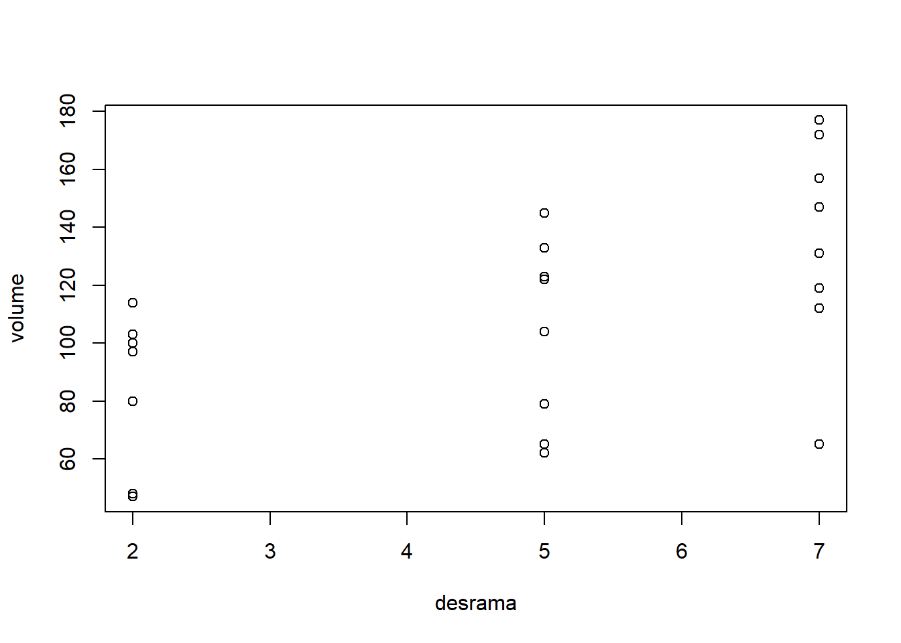
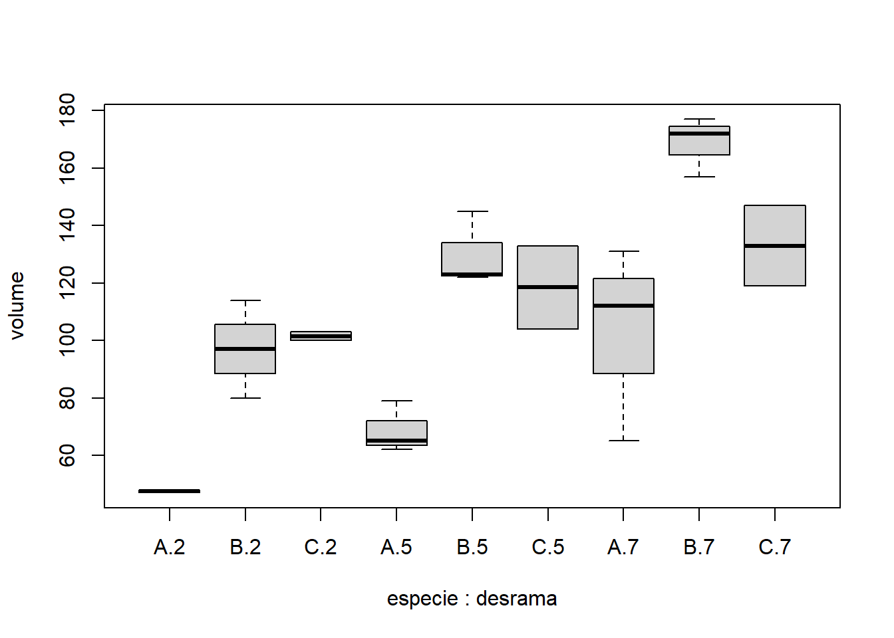
# Isolando os níveis de desrama
# Fixando desrana até 2 metros
boxplot(data = sub2[sub2$desrama == 2,], volume ~ especie)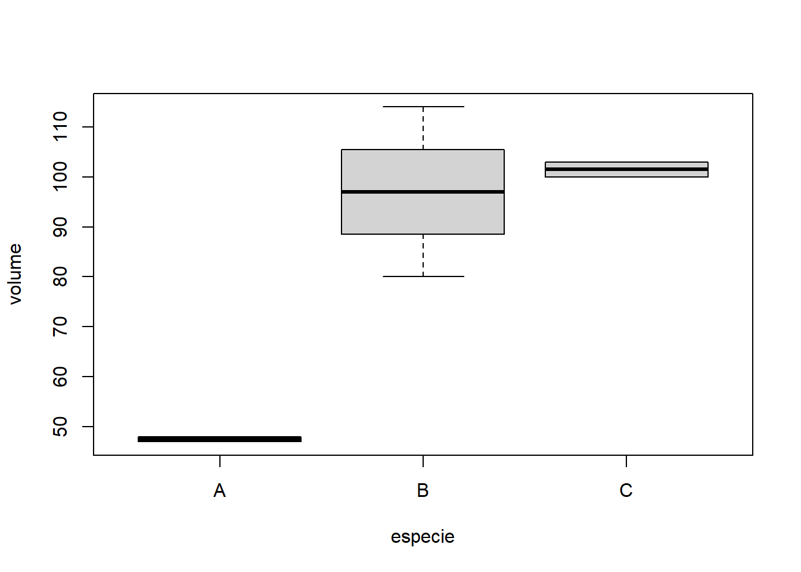
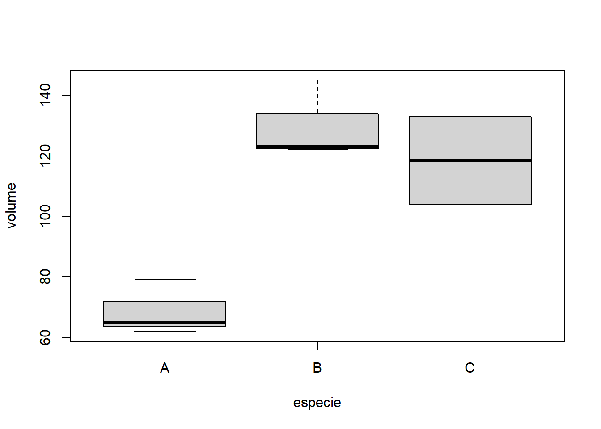
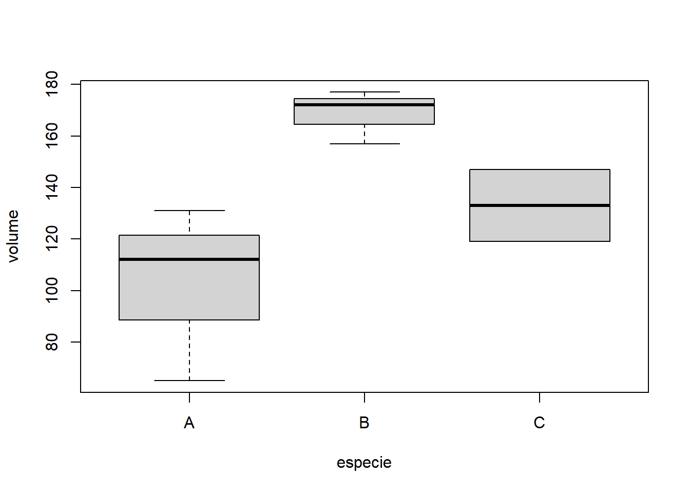
# Isolando os tipos de floresta
# Fixando espécie igual a A
plot(data = sub2[sub2$especie == "A",], volume ~ desrama)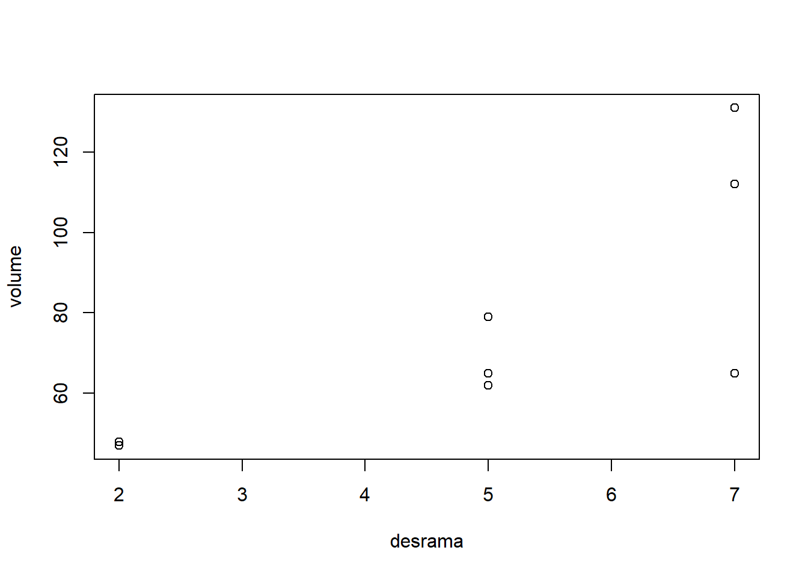
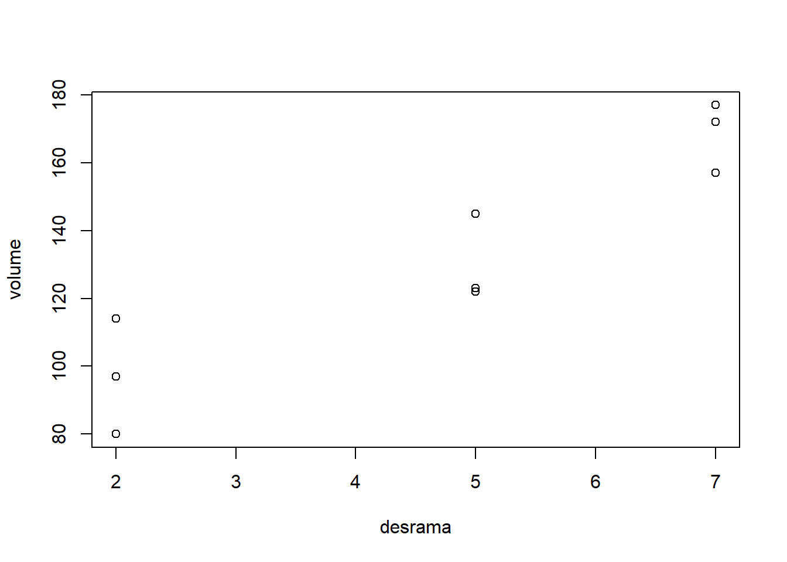
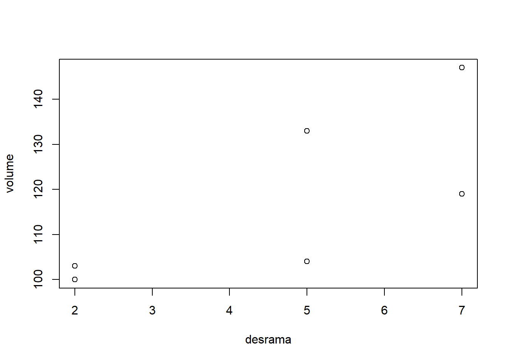
Os dados por se tratarem de experimento desbalanceados com efeito da interação relevante devem ser analisados com o pacote easyanova. A função será ea2() e possui a sintaxe básica:
Os dados devem ser apresentados na ordem:
- Fator nas parcelas
- Repetição
- Fator nas subparcelas
- Variável resposta
O parâmetro design deve ser ajustado para 4, resultando no seguinte comando:

Os resultados podem ser acessados escolhendo qual elemento da lista deseja ser visualizado:
## $`Residual analysis`
## $`Residual analysis`$values
## values
## p.value Shapiro-Wilk test 0.8313
## p.value Bartlett test (plot) 0.4160
## p.value Bartlett test (split.plot) 0.2427
## p.value Bartlett test (plot*split.plot) 0.6827
## AIC 165.0415
## BIC 172.7102
## first value most discrepant 7.0000
## second value most discrepant 6.0000
## third value most discrepant 13.0000
## Mean Square of Error a 402.7662
## Mean Square of Error b 220.3501
## Coefficient of Variation a 18.4488
## Coefficient of Variation b 13.6457
##
## $`Residual analysis`$residuals
## 1 2 3 4 5 6
## -2.8241221 2.8241221 1.6212788 4.1091983 -5.7304770 19.6212788
## 7 8 9 10 11 12
## -26.8908017 7.2695230 -12.9589104 -0.6517886 13.6106990 -2.9589104
## 13 14 15 16 17 18
## 14.3482114 -11.3893010 7.3744229 -12.3184553 4.9440324 -3.5066019
## 19 20 21 22 23
## 3.5066019 7.9988237 -7.9988237 7.4988237 -7.4988237
## attr(,"label")
## [1] "Residuals"
##
## $`Residual analysis`$`standardized residuals`
## 1 2 3 4 5 6
## -0.26911379 0.26911379 0.15449349 0.39157015 -0.54606364 1.86973386
## 7 8 9 10 11 12
## -2.56245492 0.69272107 -1.23486923 -0.06210968 1.29697891 -0.28195792
## 13 14 15 16 17 18
## 1.36725729 -1.08529938 0.70271711 -1.17383954 0.47112244 -0.33414806
## 19 20 21 22 23
## 0.33414806 0.76221696 -0.76221696 0.71457139 -0.71457139O teste de normalidade apresentou valor não significativo, indicando assim que não há evidências para rejeitar a normalidade dos resíduos.## $`Marginal anova (Type III Sum of Squares)`
## numDF denDF F-value p-value
## plot 2 6 16.07861 0.0039
## split.plot 2 8 21.60633 0.0006
## plot:split.plot 4 8 1.27547 0.3555Sendo a interação não significativa, os fatores (da parcela e da subparcela) devem ser analisados independentemente.
## $`Adjusted means (plot)`
## plot adjusted.mean standard.error tukey snk duncan t
## 1 B 131.8889 7.6958 a a a a
## 2 C 118.3355 8.6638 a a a a
## 3 A 71.1485 8.0186 b b b b## $`Adjusted means (split.plot)`
## split.plot adjusted.mean standard.error tukey snk duncan t
## 1 7 134.5013 6.4491 a a a a
## 2 5 105.4458 6.4491 b b b b
## 3 2 81.4258 6.8129 c c c c